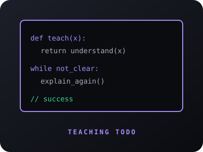

20XX · 20XX
Ingénieur EPFL, robotique
École polytechnique fédérale de Lausanne
Spécialisation en robotique, traitement d'image et automatique. Une formation exigeante qui m'a donné le réflexe de raisonner par premiers principes et de coder en pensant production.